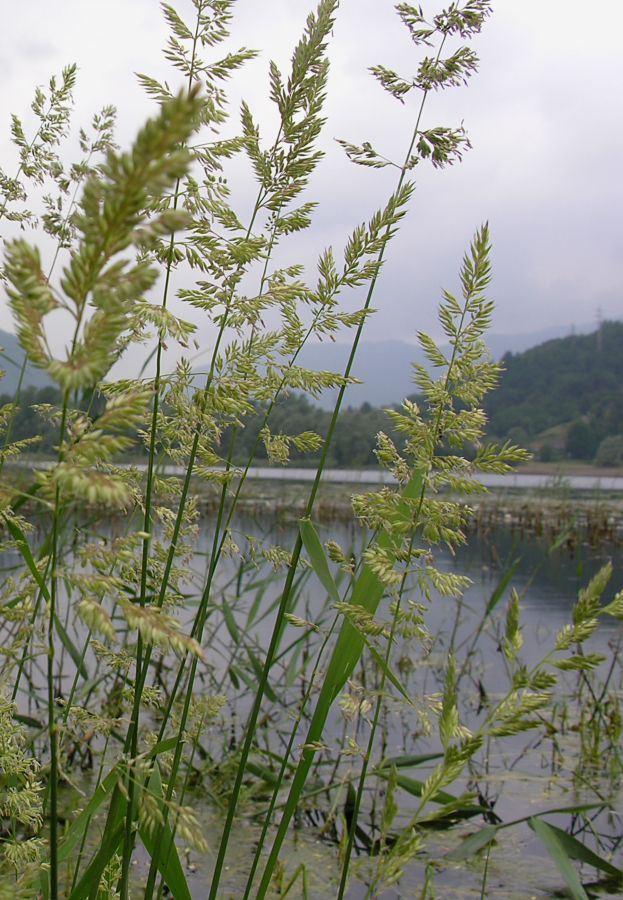

Leucojum Vernum
Amaryllidaceae
4.5 Camefite
Appartengono a questa categoria suffrutici (piante con fusto legnoso alla base ed erbaceo nella parte superiore) che portano le gemme fino ad un'altezza di 20-30 cm dal suolo. Partecipano allo spettro biologico con appena il 3,3% e la loro distribuzione gravita, come per le geofite, sulla porzione più naturale del territorio, dove ancora sussistono lembi di praterie aride, che rappresentano l'habitat elettivo di un certo numero di elementi fra i quali Genista germanica, Helianthemum nummularium subsp. obscurum, Teucrium chamaedrys e Thymus pulegioides. La concentrazione di camefite in ambito urbano cala bruscamente, benché alcune di queste siano in grado di colonizzare fughe di muri oi bastioni e le mura della Città Alta . Non è difficile infatti imbattersi in Antirrhinum majus, Centranthus ruber, Sedum album, S. dasyphyllum o S. sexangulare.
Sedum Dasyphyllum
Crassulaceae
4.6 Idrofite ed elofite
Esse partecipano complessivamente con l'1% allo spettro biologico generale, valore del tutto trascurabile se non fosse che queste forme biologiche sono le testimoni della presenza in ambito territoriale degli ultimi ambienti umidi superstiti, nella maggior parte dei casi ridotti lacerti profondamente alterati e abbandonati all'incuria totale. Le idrofite sono infatti erbe acquatiche con gemme svernanti sommerse, mentre le elofite preferiscono habitat intermedi e affondano le gemme nella fanghiglia. La loro distribuzione è ormai limitata a poche aree.

Phalaris Arundinacea
Poaceae
4.7 Idrofite ed elofite
Esse partecipano complessivamente con l'1% allo spettro biologico generale, valore del tutto trascurabile se non fosse che queste forme biologiche sono le testimoni della presenza in ambito territoriale degli ultimi ambienti umidi superstiti, nella maggior parte dei casi ridotti lacerti profondamente alterati e abbandonati all'incuria totale. Le idrofite sono infatti erbe acquatiche con gemme svernanti sommerse, mentre le elofite preferiscono habitat intermedi e affondano le gemme nella fanghiglia. La loro distribuzione è ormai limitata a poche aree.
Bellis Perennis
Asteraceae
5. I COROTIPI
Un corotipo (detto anche gruppo corologico o geoelemento) raggruppa specie che presentano areali di diffusione simili. Nel corotipo sono perciò espressi sia il momento geografico, sia quello macroclimatico. Lo spettro corologico, che rappresenta l'insieme dei corotipi nella flora di un territorio, ne riassume quindi le componenti fitogeografiche e nello stesso tempo ne riflette l'originalità floristica rispetto ad altri territori. In un ambito territoriale così ristretto come quello di una città, i corotipi perdono in parte la loro pregnanza fitogeografica per mantenere il significato climatico.
5.1 Corotipo eurasiatico
Riguarda il 31,8% delle specie, è il corotipo meglio rappresentato dello spettro e comprende specie diffuse nelle aree temperate dell'Eurasia. Sul piano strutturale comprende tutte le forme biologiche con accentuata partecipazione di emicriptofite (63,3%) e fanerofite (13,5%); rifuggendo dall'urbanizzazione intensa, concentra la sua distribuzione nelle aree periferiche prossimo-naturali.
5.2 Corotipo europeo
Questo gruppo corologico che, come il nome stesso dice, raggruppa specie diffuse in Europa, occupa il secondo posto nello spettro corologico con il 25,3%. La sua struttura ricalca quella del corotipo precedente, con una maggiore incidenza delle geofite, che qui toccano il 17%.
5.3 Corotipo mediterraneo s.l.
Sotto questa denominazione sono stati associati i gruppi eurimediterraneo, stenomediterraneo e mediterraneo-atlantico, dato che gli ultimi due hanno un peso troppo esiguo per essere rappresentati singolarmente. In tal modo il corotipo comprende elementi diffusi sull'intero bacino mediterraneo con penetrazioni occidentali fino alle coste atlantiche. La principale caratteristica di questo gruppo è data dalla dominanza delle terofite che da sole comprendono quasi la metà del totale (49,1%) e sono responsabili delle punte di presenza che si verificano nelle aree del perimetro urbano.
5.4 Corotipi eurosibirico
Come suggerisce il nome, questo geoelemento estende il suo dominio alle regioni fredde e temperato-fredde dell'Europa e della Siberia. Rispetto al corotipo eurasiatico presenta un'incidenza molto minore (6,9%), ma distribuzione simile, centrata sull'area dei colli.
5.5 Corotipo circumboreale
Le specie circumboreali hanno un areale comprendente le regioni temperate e fredde dell'emisfero boreale. Percentualmente di poco inferiore al precedente (6,5%), si presenta anch'esso localmente diffuso nella parte settentrionale più fresca e meno antropizzata del territorio, con baricentro distributivo spostato verso il Parco dei Colli. Il picco di segnalazioni a sud-ovest della città si giustifica col fatto che in questa area si trova il tratto meridionale del paleo-alveo del torrente Morla, che presenta una certa diversificazione di habitat (rogge e fossatelli bordati da siepi).
5.6 Corotipo europeo-montano
Gli elementi che afferiscono a questo gruppo hanno areali che abbracciano i sistemi montuosi dell'Europa meridionale. E' il corotipo che caratterizza la montagna bergamasca e, fortemente impoverito (3,7%), ma ancora segnato dal prevalere delle emicriptofite (61,7%), si trova maggiormente nelle zone settentrionali del territorio. Nella zona dei colli raggiunge percentuali superiori al 27,1%, con punte che superano il 36% del totale. L'ingresso nell'area urbana ne riduce drasticamente la presenza, dato che elementi come Centaurea scabiosa, Dianthus sylvestris, Digitalis lutea, per citarne solo alcuni, non sono in grado di sopperire alla mancanza di habitat.
5.7 Corotipo cosmopolita s.l.
Rientrano in questo gruppo specie ad ampia diffusione su gran parte del globo, con eccezione delle regioni polari. Nello spettro corologico, questo corotipo si ferma appena al 3,1%. In carattere con la distribuzione generale, anche localmente gli elementi cosmopoliti sono diffusi abbastanza omogeneamente nel territorio frequentate da elementi ubiquisti come possono essere Asplenium trichomanes, Bromus hordeaceus, Chenopodium album, Digitaria sanguinalis, Poa annua, Persicaria maculosa e Urtica dioica.
6. SPECIE ALLERGENICHE
La dispersione del polline è un fenomeno che coinvolge tutte le piante a seme (Spermatofite), dal momento che nei granuli pollinici sono contenute le cellule riproduttive deputate alla fecondazione dei gameti femminili, a seguito della quale si ha la formazione dell'embrione e la produzione del seme.
Le quantità di granuli pollinici liberati varia da specie a specie, la principale distinzione è data dal tipo di vettore, che può essere un insetto (specie entomofile) oppure il vento (specie anemofile). Nel primo caso, il polline prodotto è relativamente poco, perché l'insetto è un vettore affidabile; nel secondo caso invece, dato che il vento è un agente incostante e imprevedibile, affinché l'impollinazione vada a buon fine è necessario che la quantità di polline rilasciata sia elevata, sono quindi le specie anemofile la principale fonte di pollinosi.
Amaranthaceae e Chenopodiaceae
Data la somiglianza nella fisionomia dei granuli pollinici, accade spesso che elementi delle due famiglie non vengano distinti. La potenzialità allergenica di queste famiglie di erbe, spesso infestanti di notevoli dimensioni (1m e oltre), è debole, tuttavia possono dar luogo a pollinosi in soggetti sensibili specialmente nel corso della stagione estiva.
Asteraceae (= Compositae)
Con il 10,5% delle specie, tutte erbacee, le composite costituiscono la seconda famiglia più rappresentativa della flora, tuttavia sotto il profilo allergologico hanno importanza solo i generi Ambrosia e Artemisia, entrambi anemofili. Di minore rilievo alcune specie dei generi Helianthus, Solidago e Taraxacum, che occasionalmente disperdono il polline anche tramite il vento.
Betulaceae
Si tratta di alberi o arbusti a impollinazione anemofila, il cui interesse allergologico può essere rilevante a seconda delle regioni: nell'Europa del nord il polline di Betula è tra i maggiori agenti allergenici e fenomeni di cross-reattività si osservano ripetutamente fra la stessa Betula e Corylus, ma da noi le pollinosi attribuibili a Betula sono meno frequenti. Motivi d'attenzione crescente sono rivolti anche ad Ostrya. Nel nostro territorio sono stati osservati Alnus glutinosa, Betula pendula, Carpinus betulus, Corylus avellana e Ostrya carpinifolia.
Cupressaceae e Taxaceae
Per quanto rappresentate solo da Juniperus communis e Thuja orientalis, le Cupressaceae sono tra le maggiori responsabili di pollinosi invernali nell'area mediterranea. Nelle analisi polliniche vengono associati alle cupressacee anche i granuli delle Taxaceae, il cui unico esponente è Taxus baccata, localmente coltivato e talora inselvatichito.
Fagaceae
Questa famiglia, di grande importanza forestale, è rappresentata da Castanea sativa, Quercus cerris, Q. ilex, Q. petraea, Q. pubescens, Q. robur, e dalla nordamericana Q. rubra. In presenza di quantità rilevanti, il polline disperso può essere causa di reazioni allergiche.
Oleaceae
È noto l'elevato livello di cross-reattività tra Olea, il cui polline è fra quelli più allergenici, e altri generi della famiglia. Nel nostro territorio l'olivo è solo coltivato, mentre altre oleacee presenti sono Fraxinus excelsior, F. ornus, Jasminum officinale, Ligustrum lucidum, L. ovalifolium, L. sinense e L. vulgare.
Poaceae (Graminaceae)
Le graminacee costituiscono la famiglia di erbe più importante nella flora del territorio 106 specie (10,8% del totale) e tutte sono considerate potenzialmente allergeniche per la frequenza di sensibilizzazione nella popolazione, per la loro diffusione, per quantità di polline aerodiffuso e la sua permanenza in atmosfera. I rappresentanti più frequenti di questa specie risultano: Alopecurus myosuroides, Anthoxanthum odoratum, Arrhen elatius, Avena barbata, Brachypodium rupestre e B. sylvaticum, Bromus hordeaceus dritensis e B. sterilis, Cynodon dactylon, Dactylis glomerata, Digitaria sanguinalis chloa crus-galli, Eleusine indica.
Urticaceae e Moraceae
Fra le orticacee il genere Parietaria (P. judaica, P. officinalis) riveste importanza primaria accentuata dal fatto che le due specie sono molto diffuse e con fioritura estesa a tutto no. Nella dispersione, i filamenti curvi degli stami si raddrizzano bruscamente, proiettando in aria nuvole di polline che non si allontana molto dalla pianta, ma raggiunge concentrazionii molto elevate. Molto minore invece l'importanza del genere Urtica (U. dioica), malgrado an ch'esso sia anemofilo.
Le stagioni polliniche
La stagione pollinica va da febbraio a ottobre, ma le quantità più elevate di polline aerodiffuso si riscontrano nel primo semestre (febbraio-luglio), con picchi di concentrazioni fra aprile e maggio, allorché si registra la presenza dei granuli di tutte le famiglie qui considerate. Concordemente con quanto già noto per altre realtà urbane, anche a Bergamo si possono indicare quattro stagioni polliniche fondamentali: la stagione tardo-invernale è caratterizzata dalla pollinazione di cupressacee e betulacee (incluse le corilacee); durante la successiva stagione primaverile (aprile e in subordine maggio) si verifica la massima concentrazione nell'atmosfera dei pollini di betulacee, fagacee, oleacee, graminacee e orticacee, mentre si affievolisce notevolmente la presenza delle cupressacee; in estate si nota la progressiva diminuzione di alcuni pollini primaverili (soprattutto betulacee e orticacee), mentre tende ad aumentare la presenza delle composite, più tardive, che raggiungono il picco in agosto-settembre; durante l'autunno la presenza di pollini diminuisce progressivamente, anche se continua in tono minore quella di composite, graminacee e orticacee, mentre si assiste ad una coda nella pollinazione delle cupressacee (verosimilmente Taxus). Nei primi mesi invernali infine, la presenza di polline aerodiffuso si riduce rapidamente.